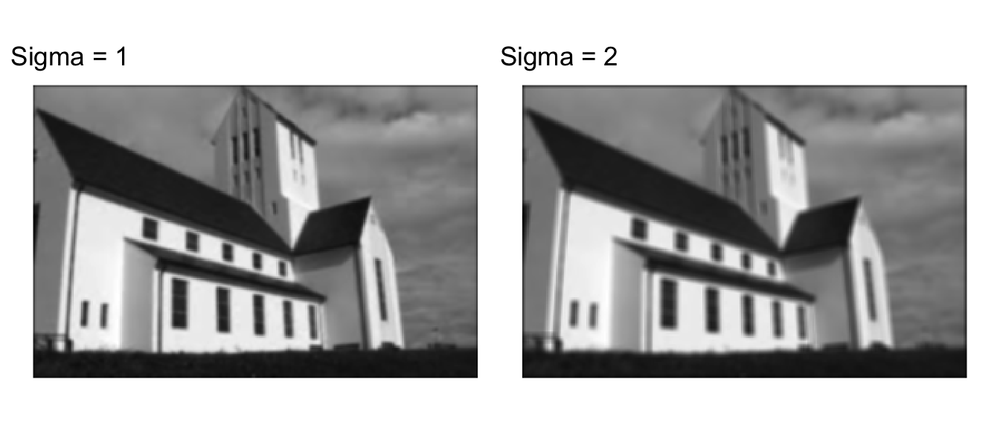
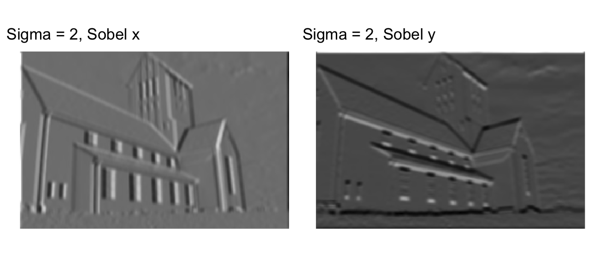
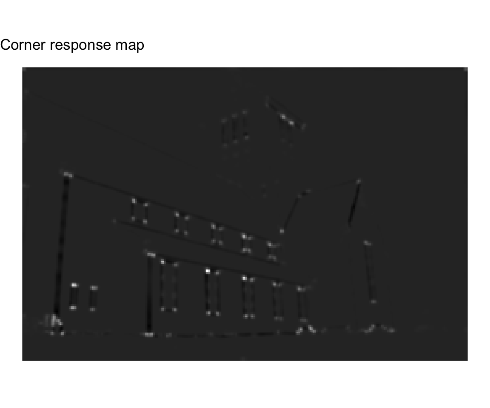
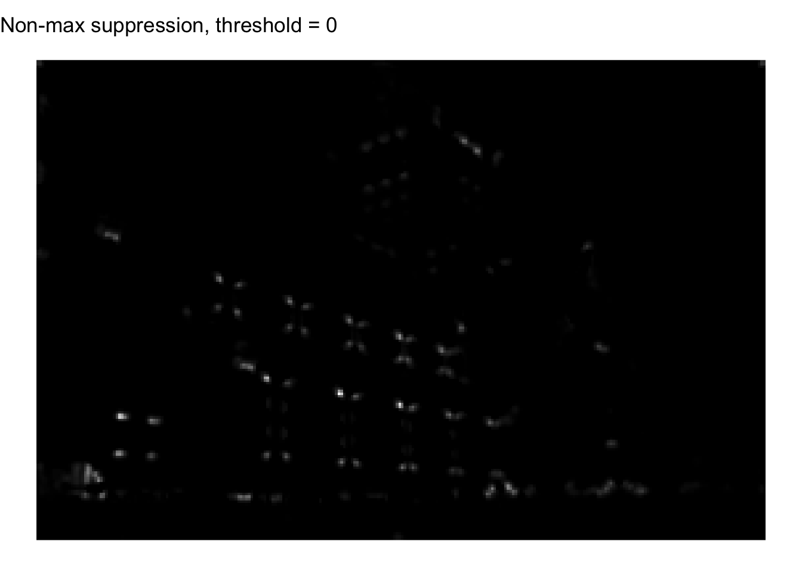
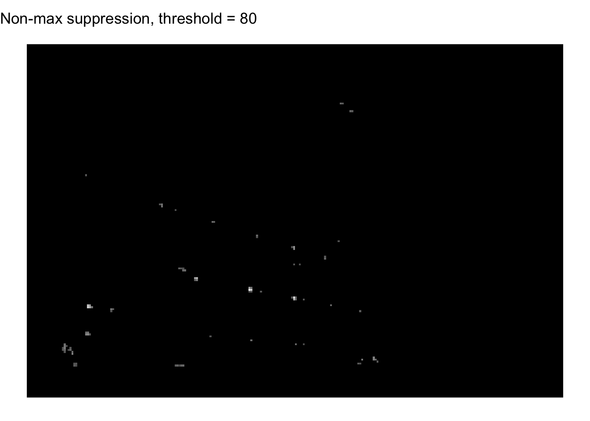

# load librariessuppressPackageStartupMessages({library(imager)library(ggplot2)library(patchwork)})# load image from file into R as a cimg objectimg <-load.image("data/image1.png")class(img)
[1] "cimg" "imager_array" "numeric"
Using the imager library, all cimg objects are represented as 4-dimensional arrays. The dimensions represent: width, height, depth, and colour. In our case, our input image is already in grayscale, and we are only concerned with each pixel value, thus the dimensions for depth and colour are largely ignored. Nonetheless, we have to initialize our image as well as all subsequent filters and images in our code to contain all four dimensions so that they will be able to convolve.
# helper function applies convolution to an image given a filterapply_convolution <-function(image, filter) {# Get dimensions of the image and the filter img_dim <-dim(image) filt_dim <-dim(filter)# Define padding size padding <-floor(filt_dim[1] /2)# initialize padded image as empty array img_padded <-array(0, dim =c( img_dim[1] +2* padding, img_dim[2] +2* padding, img_dim[3], img_dim[4] ))# populate padded image array with image pixels img_padded[ (1+ padding):(img_dim[1] + padding), # width (1+ padding):(img_dim[2] + padding), , # height ] <- image# initialize convolved image as empty array img_convolved <-array(0, dim = img_dim)# iterate each pixel in image and convolve with filterfor (i in1:img_dim[1]) {for (j in1:img_dim[2]) { pixel_convolved <-0for (k in1:filt_dim[1]) {for (l in1:filt_dim[2]) { pixel_convolved <- pixel_convolved + filter[k, l, , ] * img_padded[i + k -1, j + l -1, , ] } } img_convolved[i, j, , ] <- pixel_convolved } }return(as.cimg(img_convolved))}# helper function displays images, given an image and titleplot_img <-function(img, title ="") {# convert image to dataframe img_df <-as.data.frame(img)# generate plot of dataframe plot <-ggplot(img_df, aes(x, y)) +# nolint# define rasterizationgeom_raster(aes(fill = value), show.legend =FALSE) +# nolint# define color scale (grayscale)scale_fill_gradient(low ="black", high ="white") +# fix pixel ratio / aspect ratiocoord_fixed() +# reverse y scale (image orientation)scale_y_reverse() +# set titleggtitle(title) +# remove all graphical details from plot besides imagetheme_void()return(plot)}# display the original imageplot_img(img, "Original Image")
(a)
Implement convolution process of smoothing Image 1 with a 5 x 5 Gaussian Filter with σ = 1 and 2, plot the corresponding output images.
# function applies a kxk Gaussian filter to an image with a sigma valueapply_gaussian <-function(img, ksize, sigma) {# initialize x and y vectors around 0, e.g. [-2, -1, 0, 1, 2] center <-floor(ksize /2) x <- y <-seq(-center, center, 1)# Gaussian function gauss <-outer(x, y, function(x, y) {exp(-(x^2+ y^2) / (2* sigma^2)) })# initialize kernel as empty array kernel <-array(0, dim =c(ksize, ksize, 1, 1))# populate kernel with Gaussian filter values kernel[, , 1, 1] <- gauss# display kernel valuesprint("Resulting kernel:")print(kernel[, , 1, 1])# convolve image with kernel img_flt <-apply_convolution(img, kernel)return(img_flt)}# apply Gaussian filter to image with sigma = 1img_gauss_1 <-apply_gaussian(img, ksize =5, sigma =1)
# show resulting images side by sideplot_img(img_gauss_1, "Sigma = 1") +plot_img(img_gauss_2, "Sigma = 2")

We can see that the blurring effect from the Gaussian filter is stronger with a greater sigma value.
(b)
Implement convolution process of convolving a 3 x 3 Sobel filters (Sx and Sy) with the output images you obtained in step a. Plot the outputs of this process.
Applying Sobel filters to Image with Gaussian filter where σ = 1:
# apply Sobel filters to first Gaussian filter outputimg_g1_sx <-apply_convolution(img_gauss_1, sobel_x) # x filterimg_g1_sy <-apply_convolution(img_gauss_1, sobel_y) # y filter# show resulting images side by sideplot_img(img_g1_sx, "Sigma = 1, Sobel x") +plot_img(img_g1_sy, "Sigma = 1, Sobel y")
Applying Sobel filters to Image with Gaussian filter where σ = 2:
# apply Sobel filters to second Gaussian filter outputimg_g2_sx <-apply_convolution(img_gauss_2, sobel_x) # x filterimg_g2_sy <-apply_convolution(img_gauss_2, sobel_y) # y filter# Show resulting images side by sideplot_img(img_g2_sx, "Sigma = 2, Sobel x") +plot_img(img_g2_sy, "Sigma = 2, Sobel y")

Edge detection is a bit sharper with the lower sigma value, however this comes at the cost of increased noise.
(c)
Implement convolution process of convolving Image 1 with \(\frac{\partial G}{\partial x}\) and \(\frac{\partial G}{\partial y}\) filters (5 x 5 filters and for σ = 1 and 2).
# function applies first partial x-derivative Gaussian filter to an imageapply_d_gaussian_x <-function(img, ksize, sigma) {# initialize x and y vectors around 0, e.g. [-2, -1, 0, 1, 2] center <-floor(ksize /2) x <- y <-seq(-center, center, 1)# first derivative of Gaussian function wrt x dgauss <-outer(x, y, function(x, y) { (-x / sigma^2) *exp(-(x^2+ y^2) / (2* sigma^2)) })# initialize kernel as empty array kernel <-array(0, dim =c(ksize, ksize, 1, 1))# populate kernel with x-derivative Gaussian filter values kernel[, , 1, 1] <- dgauss# display kernel valuesprint("Resulting kernel:")print(kernel[, , 1, 1])# convolve image with kernel window img_flt <-apply_convolution(img, kernel)return(img_flt)}# function applies first partial y-derivative Gaussian filter to an imageapply_d_gaussian_y <-function(img, ksize, sigma) {# initialize x and y vectors around 0, e.g. [-2, -1, 0, 1, 2] center <-floor(ksize /2) x <- y <-seq(-center, center, 1)# first derivative of Gaussian function wrt y dgauss <-outer(x, y, function(x, y) { (-y / sigma^2) *exp(-(x^2+ y^2) / (2* sigma^2)) })# initialize kernel as empty array kernel <-array(0, dim =c(ksize, ksize, 1, 1))# populate kernel with y-derivative Gaussian filter values kernel[, , 1, 1] <- dgauss# display kernel valuesprint("Resulting kernel:")print(kernel[, , 1, 1])# convolve image with kernel window img_flt <-apply_convolution(img, kernel)return(img_flt)}# apply derivative Gaussian filters to Image with sigma = 1img_dg1_x <-apply_d_gaussian_x(img, ksize =5, sigma =1) # x-derivative
Please explain what do you observe comparing the results of step b and c?
Step b utilized edge detection using the Sobel filter for x and y, and step c utilized the first derivative Gaussian filter for x and y. We can plot a review of the output images below:
From the rasterizations above, we can see that both filters are effective at their main goal of edge detection. On it’s own, the Sobel filters is known to be sensitive to noise, and so we first filtered the image using Gaussian filters before applying the Sobel filters. The first derivative Gaussian filter does not have as much sensitivity. One noticeable difference is the opposite visual effects the filters have; the edges that appear to be protruding in the Sobel filter, appear to be sunken in the derivative Gaussian filter. This likely results from how the two filters emphasize the orientation of edges, with opposite negative and positive values in the resulting image. Finally, another difference observed between the two filters is that the edges are lighter and thicker with the Sobel filters, whilst the edges are darker and sharper with the derivative Gaussian filter (albeit to a slim extent). This may be attributed to the extra step of pre-filtering the image with a Gaussian filter before applying the Sobel filter, which adds an extra level of blur. On the other hand, the derivative Gaussian filter both removes noise and detects edges in one filter, which removes an extra step needed, also resulting in less of a blurring effect.
2. Corner Detection
Implement Harris Corner Detection algorithm step by step as explained in the class. Apply your script to detect corners in image 1. Plot the corner response map, and the non-maximum suppression output.
Setup: define parameters used in Harris Corner Detection
# window size for Gaussian filter (w x w)w <-5# sigma for Gaussian filtersigma <-1# empirically determined constant used in corner response calculationk <-0.04
# note: see Edge Detection (a) for implementation of apply_gaussian()# initialize empty matrix M to store sumsM <-array(0, dim =c(nrow(img), ncol(img), 2, 2))# populate matrix M with sumsfor (i inseq_len(nrow(img))) {for (j inseq_len(ncol(img))) {# insert 2x2 matrix for each pixel M[i, j, , ] <-matrix(c( S_xx[i, j, , ], S_xy[i, j, , ], S_xy[i, j, , ], S_yy[i, j, , ] ),nrow =2 ) }}
Step 3. Corner response calculation
# initialize empty matrix R to store measure of corner responseR <-array(0, dim =c(nrow(img), ncol(img), 1, 1))# populate matrix R with corner responses per pixelfor (i inseq_len(nrow(img))) {for (j inseq_len(ncol(img))) {# extract matrix M for current pixel M_ij <-matrix(M[i, j, , ], nrow =2, ncol =2)# compute eigenvalues eigenM <-eigen(M_ij) lambda1 <- eigenM$values[1] # first eigenvalue of current M lambda2 <- eigenM$values[2] # second eigenvalue of current M# compute determinant and trace using eigenvalues detM <- lambda1 * lambda2 traceM <- lambda1 + lambda2# compute corner response and add to matrix R R[i, j, , ] <- detM - k * traceM^2 }}# plot resultscorner_response_map <-as.cimg(R)plot_img(corner_response_map, "Corner response map")

In our corner response map, we can see that white areas correspond to corners, and black areas correspond to edges.
Step 4. Non-maximum suppression
# view summary of our corner responsessummary(R)
Min. 1st Qu. Median Mean 3rd Qu. Max.
-49.03308 -0.01485 0.00000 -0.02343 0.00059 202.64260
From our summary, we can see the the values are distributed around a center of approximately 0. Since greater positive values correspond to a higher corner detection response, I can set a threshold of 0 to capture any pixels with a positive value. In the histogram, we can see that the vast majority of pixels have a value of around 0, while very few have values over 50, or even 25. We can increase the threshold up depending on how sharply we want to define where corners are detected.
# corner R value thresholdthreshold <-0# keep only values meeting threshold, setting otherwise to 0 (black)R_thr <- RR_thr[R_thr < threshold] <-0# plot resultsnon_max_suppression <-as.cimg(R_thr)plot_img(non_max_suppression, "Non-max suppression, threshold = 0")

In this image, only corners are displayed in white, while all other non-corner pixels are left out of the image (i.e. are black). We can see that the Harris corner detection highlights the corners of each window of the building, as well as corners of the roof and building itself.
For comparison’s sake, we can increase the threshold to only include pixels with a much higher positive corner response:
# increased corner R value thresholdthreshold <-80# plot resultsR_thr <- RR_thr[R_thr < threshold] <-0non_max_suppression <-as.cimg(R_thr)plot_img(non_max_suppression, "Non-max suppression, threshold = 80")

Here our results are much sharper and excludes possible corners brought about by noise.